Explore detailed guest stories, route insights and real road films from Du Gia, Nho Que, Ma Pi Leng and Lung Cu.
05 · Blog — Journeys & Guest Stories
Stories from the Ha Giang Loop
Real guest experiences, road films and route guides from Du Gia, Nho Que, Ma Pi Leng and Lung Cu.
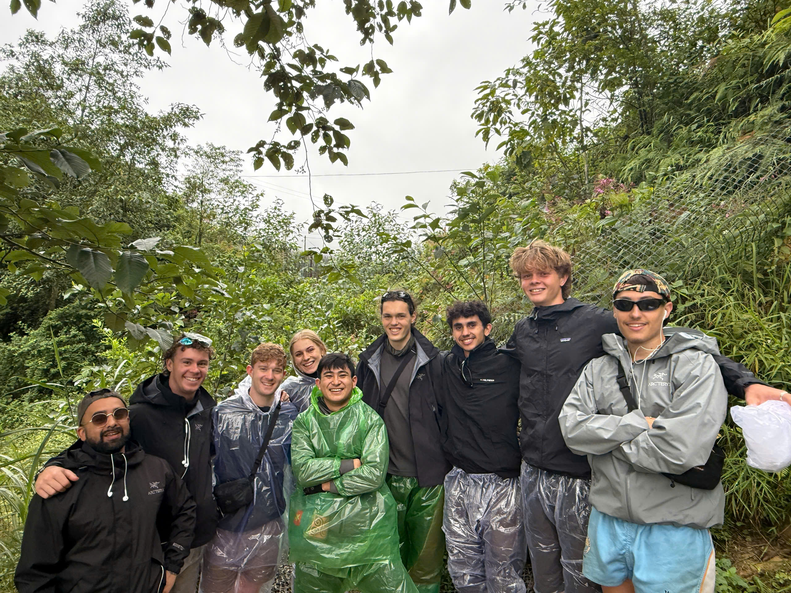
▶ Tour Film · Guest Story
Du Gia Forest Trail · Group Loop
Rain Ponchos & Easy Rider Spirit on the Trail to Du Gia
When a sudden highland shower rolled across the Du Gia valley trail, our local Easy Riders turned a misty walk into the most unforgettable bonding moment of the trip.
Read full story ↗
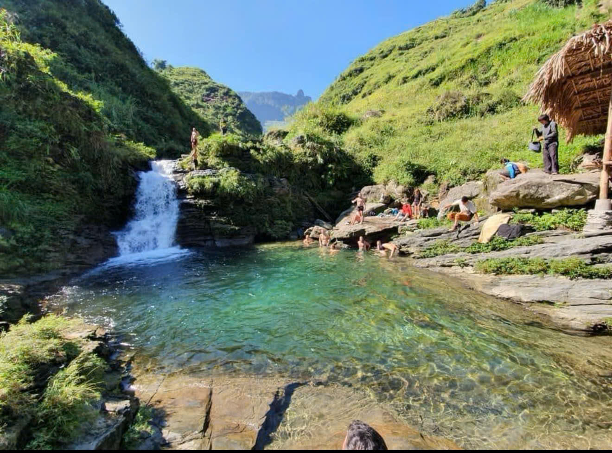
▶ Tour Film · Waterfall Swim
Du Gia Emerald Waterfall · Day 1 / Day 2
Afternoon Swim & Cliff Jumping at Du Gia Emerald Waterfall
Trading riding jackets and helmets for an unhurried afternoon swimming in cool jade-green mountain water right beneath the forest cascade.
Read full story ↗
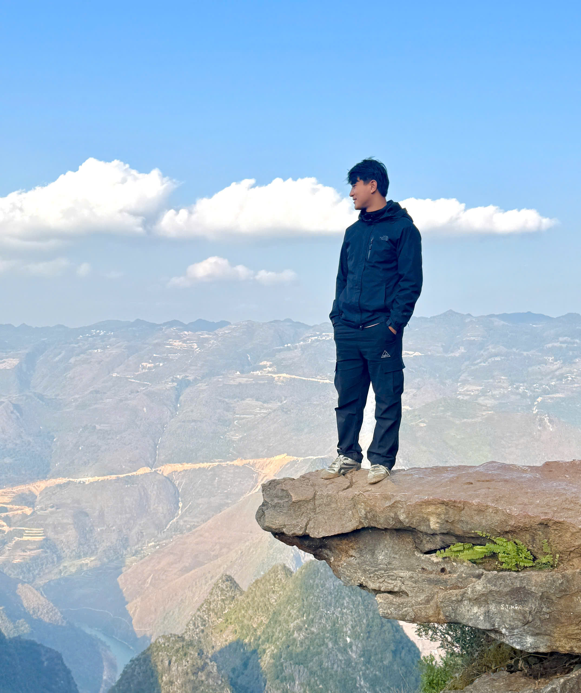
Skywalk Viewpoint · Guest Story
Ma Pi Leng Cliff Ledge · High Pass
Standing on the Overhanging Cliff Ledge Above Ma Pi Leng Gorge
How our local guide timed our morning hike so the valley clouds parted right as we stepped onto the iconic stone ledge above the Nho Que canyon.
Read full story ↗
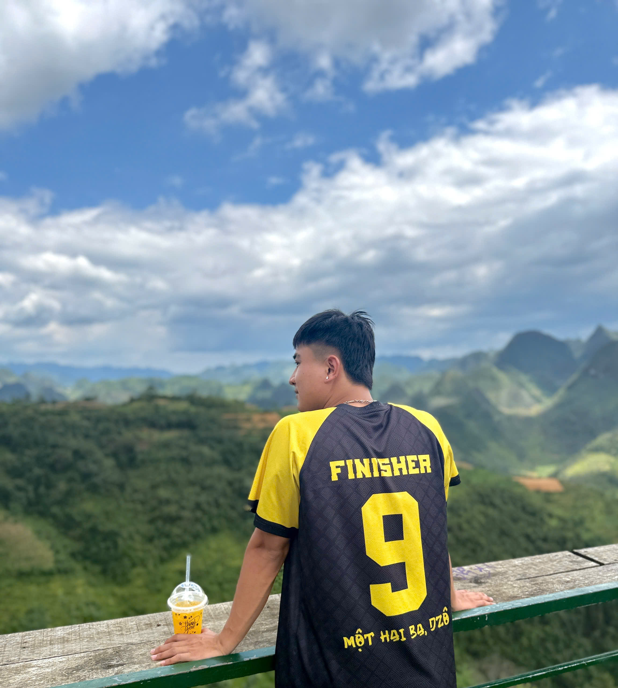
▶ Tour Film · Viewpoint Cafe
Karst Plateau Rest Stop · Live Music
Earning the #9 Finisher “Một Hai Ba, Dzô!” Jersey Over Iced Coffee
From cold Vietnamese coffee on a cliffside balcony to guests singing “Valerie” live above a horizon of a thousand limestone peaks.
Read full story ↗
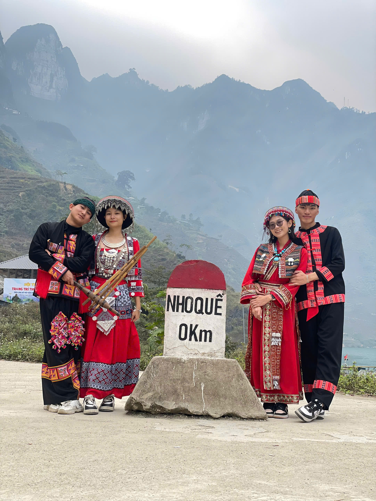
▶ Tour Film · Couples Story
Nho Que 0Km Milestone · Cultural Stop
Two Couples & the Bamboo Khèn Flute at the Nho Que 0Km Milestone
Pausing together before the canyon descent to wear traditional red-and-black embroidered Hmong attire beside the Nho Que 0Km stone marker.
Read full story ↗
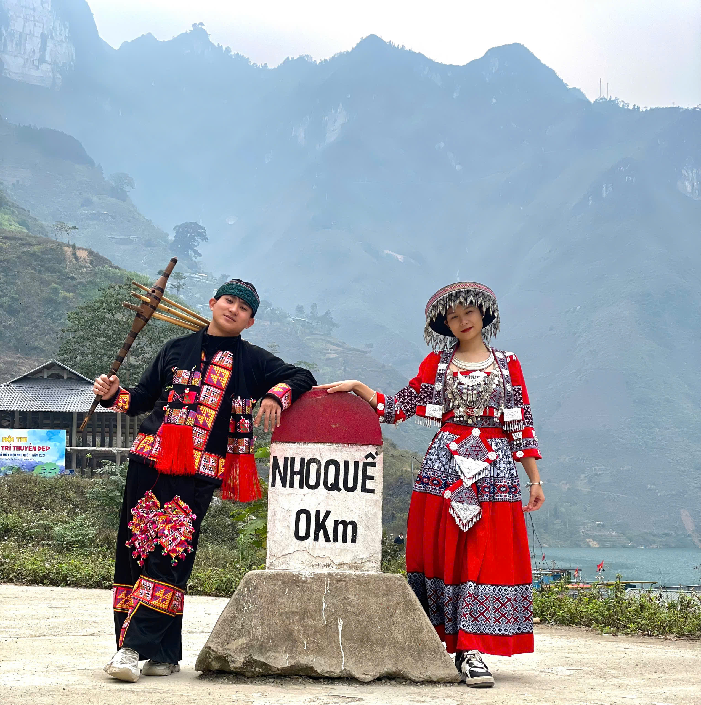
Highland Craft · Cultural Guide
Nho Que 0Km & Lung Tam Weaving
Hand-Embroidered Hmong Brocade & Silver Jewelry in the Mist
The living story behind pleated hemp skirts, indigo batik patterns and handcrafted silver neck rings across the northern highlands.
Read full story ↗
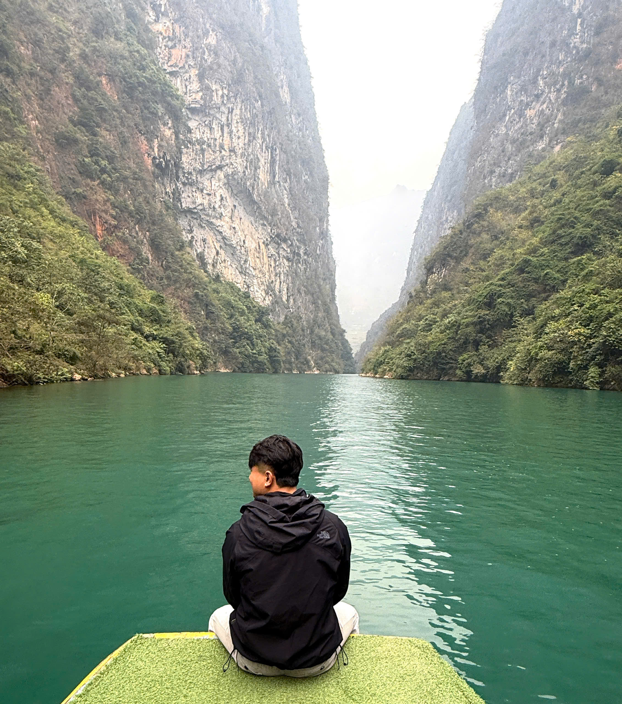
Canyon Cruise · Guest Story
Tu San Gorge · Nho Que River
Sitting on the Bow Entering the 800-Meter Walls of Tu San Canyon
Down on the water, the scale of the landscape transforms completely as your wooden boat glides between sheer vertical limestone cliffs.
Read full story ↗
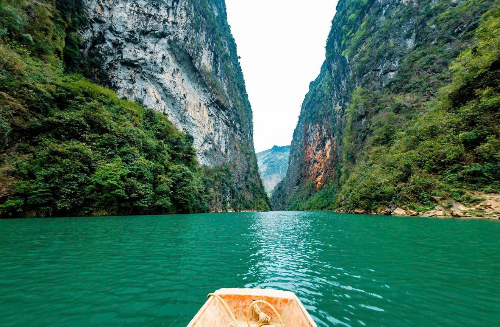
River Guide · Day 2 Timing
Nho Que Emerald Waterway · Boat Trip
First-Person on the Jade Waters of the Nho Que River
How our local team sequences the descent to the boat pier so you glide across calm, glass-like emerald water without the midday rush.
Read full story ↗
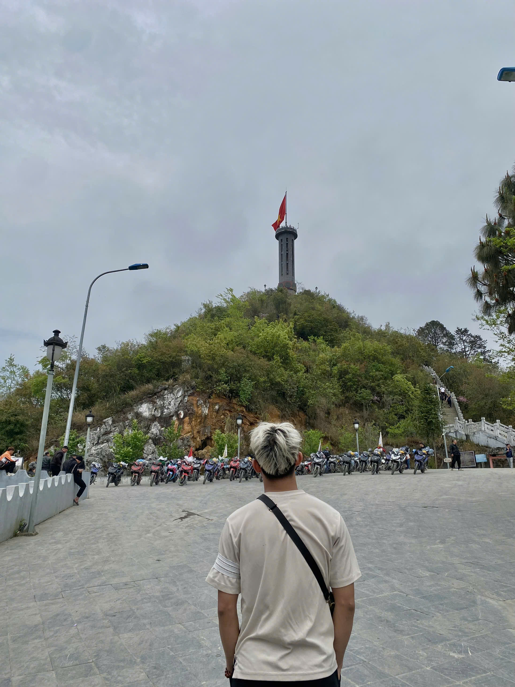
4-Day Route · Northern Frontier
Base of Lung Cu Flag Tower · Day 3
Parking Our Motorbike Convoy Below Lung Cu Flag Tower on Day 3
Why choosing the 4-day itinerary for the dedicated northern frontier ride to Dragon Mountain is a game-changer for your loop.
Read full story ↗
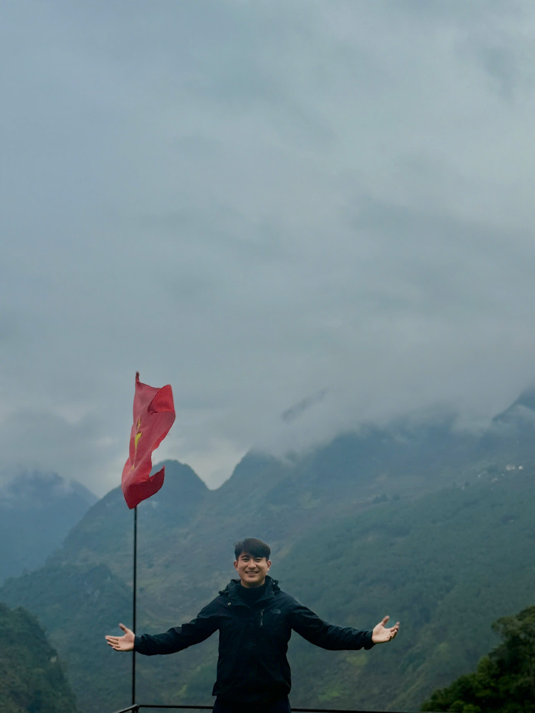
Frontier Summit · Far North
Lung Cu Summit Viewpoint · Day 3
Arms Wide Open Beneath the Red Flag in the Northern Mist
Climbing the stone stairway to stand beneath the 54-square-meter Vietnamese flag as cool mountain clouds drift across the border ridges.
Read full story ↗
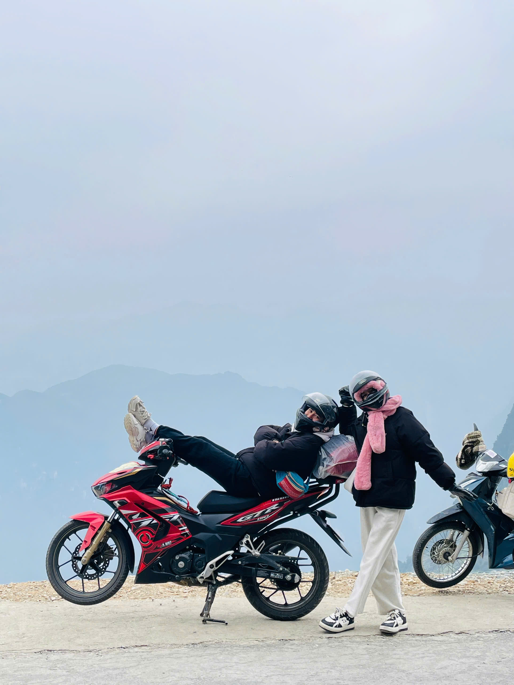
▶ Tour Film · Easy Rider POV
Highland Pass Pull-Off · Motorbikes
Riding the Misty Passes Together on the Red Honda Winner 150
Helmets strapped, warm scarves wrapped tight, and why riding pillion behind a seasoned local Easy Rider lets you soak in every view.
Read full story ↗
▶ Tour Film · Cloud Hunting
Sky Path Ridge · Cloud Lounge
Front-Row Camping Chairs Above a Sweeping Sea of Clouds
Pulling up a canvas chair at a cliffside terrace with cold drinks in hand while a sea of white clouds fills the valley below.
Read full story ↗
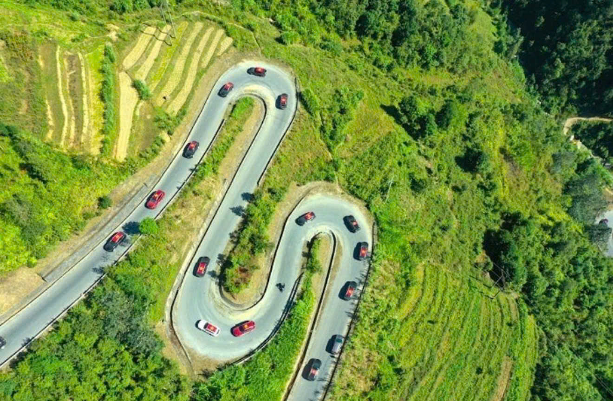
▶ Drone Reel · Route Icon
Yen Minh ↔ Dong Van · Tham Ma Pass
Red Flags on the Hairpins: Conquering the S-Curves of Tham Ma Pass
Where pack horses once tested their strength on steep limestone switchbacks, our bikes and support cars trace the most famous curves in Ha Giang.
Read full story ↗
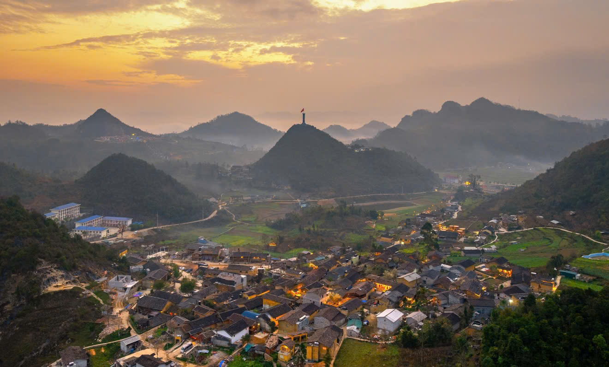
Frontier Village · Route Journal
Lo Lo Chai Village · Beneath Lung Cu
Golden Hour Over Lo Lo Chai: The Ancient Village Beneath Lung Cu
Arriving as late-afternoon sunlight turns earthen walls, stone fences and yin-yang tiled roofs warm gold at the foot of Dragon Mountain.
Read full story ↗
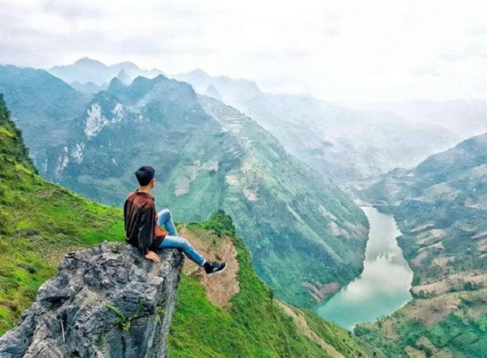
Canyon Overlook · Slow Travel
Dong Van ↔ Meo Vac · Ma Pi Leng
Quiet Moments on the Limestone Ledge: Slowing Down on Ma Pi Leng
Why our favourite memory on Ma Pi Leng Pass is sitting still for ten unhurried minutes watching cloud shadows drift across the gorge.
Read full story ↗
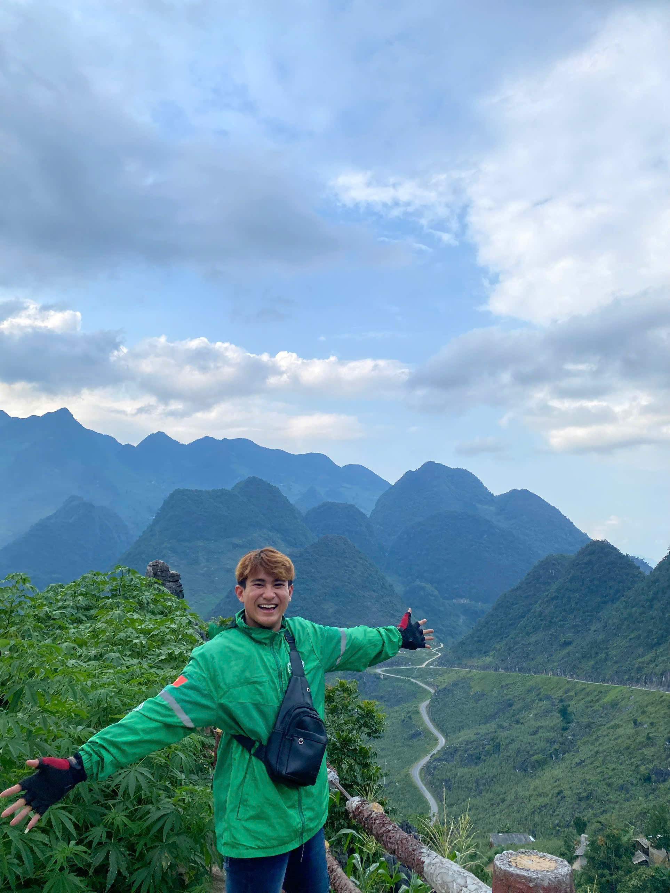
▶ Tour Film · Local Guides
Ha Giang Loop · Easy Rider Team
Easy Rider Perspective: Why Local Drivers Make the Mountain Road
Meet the highland riders who grew up on these passes—handling every hairpin, fog bank and hidden viewpoint so you can travel stress-free.
Read full story ↗
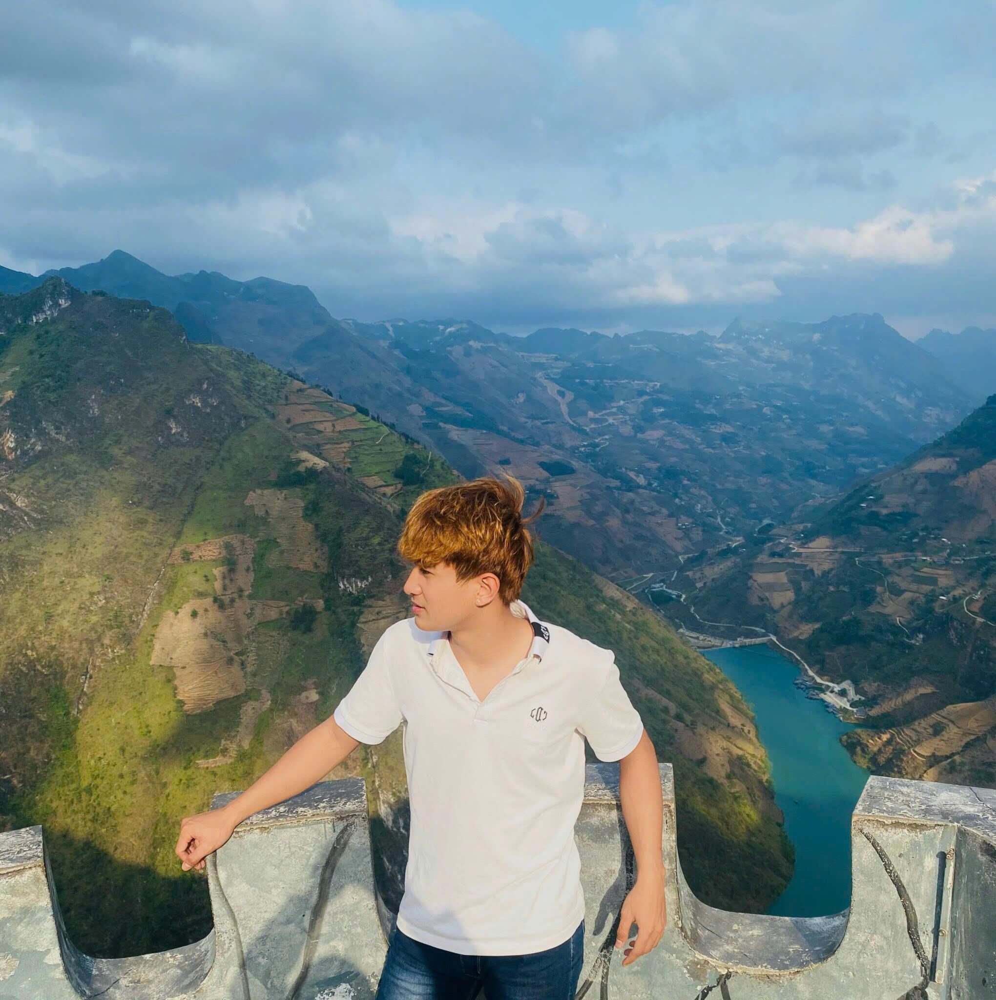
Panoramic Terrace · Route Guide
Ma Pi Leng Corridor · Viewpoint
The Stone Battlement Viewpoint: Terraced Slopes & the Nho Que Gorge
Spectacular wide-angle canyon views from a secure stone-walled terrace—ideal for guests who want iconic photos without exposed cliff edges.
Read full story ↗
Day 1 Journal · Highland Ascent
Quan Ba & Duong Thuong Valleys
Open Horizons: Breathing In the Crisp Air of Quan Ba & Duong Thuong
Leaving Ha Giang City behind and climbing through Heaven’s Gate into emerald valleys, cornfields and limestone cones on Day 1.
Read full story ↗
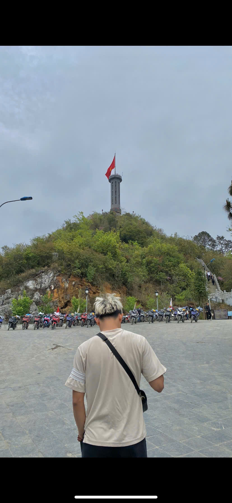
Group Convoy · Rider Community
Northern Frontier · Small Groups
Two Wheels at the Frontier: How Our Small-Group Rides Stay Connected
How a lead guide, steady pacing and a sweep driver turn solo travellers, couples and friends into one tight-knit mountain crew.
Read full story ↗
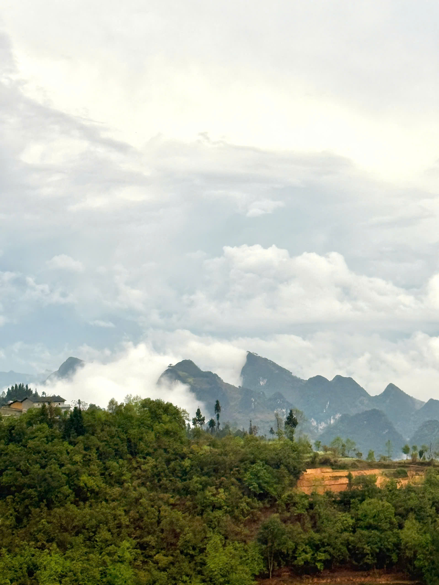
Seasons & Weather · Route Guide
Highland Ridges · Cloud Hunting
When the Mountains Breathe: Morning Cloud Inversions in Ha Giang
Understanding Ha Giang’s microclimates, the best months for cloud hunting, and what to pack for crisp mountain mornings.